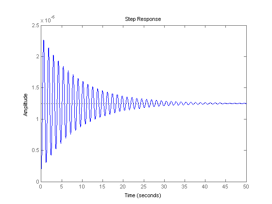
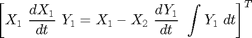
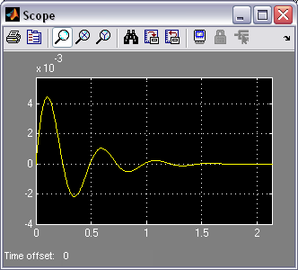

Suspension: Simulink Controller Design
Contents
Simulink Model
The Simulink model for the suspension system was developed in the Suspension: Simulink Modeling section, and can be downloaded here: suspmod.mdl.
Extracting a linear model into MATLAB
A linear model of the system (in state space or transfer function form) can be extracted from a Simulink model into MATLAB. This is done through the use of In1 and Out1 blocks and the MATLAB function linmod. We will extract only the model from the input U to the output X1-X2.
- First, replace the U Step block with an In1 block.
- Also, replace the Scope block with an Out1 block. (These blocks can be found in the Ports & Subsystems library). This defines the input and output of the system for the extraction process.

Save your file as "suspmod.mdl" (select Save As from the File menu). MATLAB will extract the linear model from the saved model file, not from the open model window. At the MATLAB prompt, enter the following commands. You should see the following output, providing both state-space and transfer function models of the system.
[A,B,C,D]=linmod('suspmod')
[num,den]=ss2tf(A,B,C,D)
A =
1.0e+03 *
0 0 0.0010 0
0 0 0 0.0010
-0.0320 0.0320 -0.0001 0.0001
0.2500 -1.8125 0.0011 -0.0480
B =
0
0
0.0004
-0.0031
C =
1 -1 0 0
D =
0
num =
0 0 0.0035 0.0188 0.6250
den =
1.0e+04 *
0.0001 0.0048 0.1851 0.1721 5.0000
To verify the model extraction, we will generate an open-loop step response of the extracted transfer function in MATLAB. Enter the following command in MATLAB. You should see the following plot which is equivalent to the Scope's output.
step(num,den);
Implementing full state-feedback control
In the Suspension: State-Space Controller Design page a full state-feedback controller was designed feeding back the following five states:
(1)
The controller used the following feedback gain matrix:
K = [ 0 2.3E6 5E8 0 8E6 ]
To implement this in Simulink, we will contain the open-loop system from earlier in this page in a Subsystem block.
- Create a new model window.
- Drag a Subsystem block from the Subsystems & Ports library into your new model window.

- Double-click on this block. You will see a blank window representing the contents of the subsystem (which is currently empty).
- Open your previously saved model of the vehicle suspension system, suspmod.mdl.
- Select Select All from the Edit menu (or Ctrl-A), and select Copy from the Edit menu (or Ctrl-C).
- Select the blank subsystem window from your new model and select Paste from the Edit menu (or Ctrl-V). You should see your original system in this new subsystem window (you may need to use the scroll bars to center on it).
- Label the In1 block "U", and the Out1 block "y1".
- Replace the W Step block with an In1 block and label this block "W".

Now we will generate the other state outputs from the subsystem.
- Insert an Out1 block below the "y1" block and label it "d/dt(y1)", Tap a line off the line leading into the Damper 1 gain block (V1-V2) and connect it to the d/dt(y1) Out block.
- Insert another Out1 block below the "d/dt(y1)" Out1 block and label it "x1".
- Tap a line off the "x1" line and connect it to this Out1 block.
- Insert another Out1 block below the "x1" Out1 block and label it "d/dt(x1)".
- Tap a line off the "v1" line and connect it to this Out1 block.

The final, extra, state needs to be generated, which is the integral of Y1.
- Insert an Integrator block above the "y1" Out block and connect its input with a line tapped of the input to the "y1" Out1 block.
- Insert an Out1 block, label it "int(y1)", and connect it to the output of the new Integrator block.

Since the state outputs will be used to form a vector, it is important that they be numbered in the right order.
- Edit the "x1" Out1 block and change its Port Number to "1".
- Similarly, change the "d/dt(x1)" Out1 block's port number to "2", "y1" Out1 block's port number to "3", "d/dt(y1)" Out1 block's port number to "4", and "int(y1)" Out1 block's port number to "5".
- The In1 blocks should be numbered such that "U" is "1" and "W" is "2". Some of these numbers may already be correct.

- Close the Subsystem window. You should now see input and output terminals on the Subsystem block.
- Name this block "Suspension Model".
- You should resize this block so that you can read all of the labels. To do this, highlight it by single-clicking on it and drag one of the highlighted corners to the right size. Notice that the model has two inputs and five outputs. Each input and output is a scalar signal in this model.

Now, we will build a full state-feedback controller around the plant model. First, we need to create a vector signal out of the five scalar outputs in order to multiply by the feedback gain matrix K.
- Insert a Mux block (from the Signal Rounting library) to the right of the Suspension Model block. The Mux takes multiple inputs and combines them into a vector signal. By default, the Mux has two inputs.
- Edit the Mux block and change the Number of Inputs to "5".
- Resize the Mux so that it is the same height as the Suspension Model block.

Now, we will close the loop.
- Insert a Matrix Gain block (from the Math Operations library) below the Suspension Model block.
- Flip the Matrix Gain left-to-right and edit its value to "K".
- Insert a Sum block to the left of the Suspension Model block.
- Edit its signs to "+-".
- Connect the output of the Matrix Gain to the negative input of the Sum block.
- Connect the output of the Sum block to the "U" input of the Suspension Model.

- Insert a Step block and connect it to the positive input of the Sum block.
- Label the step block "r" and edit its Step Time to "0" and its Final Value to "0" (we are commanding the vehicle to stay level).
- Insert a Step block and connect it to the "W" input of the Suspension Model.
- Edit its Step Time to "0" and its Final Value to "-.1" (we are now assuming a 10cm deep pothole).
- Insert a Scope block and tap a line off the "y1" output of the Suspension Model and connect it to the Scope.

Closed-loop response
To simulate this system, first, an appropriate simulation time must be set. Select Parameters from the Simulation menu and enter "2" in the Stop Time field. The design requirements included a settling time of less than 5 sec, and the system actually settles in 2 sec. The physical parameters must now be set. Run the following commands at the MATLAB prompt:
m1 = 2500; m2 = 320; k1 = 80000; k2 = 500000; b1 = 350; b2 = 15020;
The last step is to assign values to the feedback gain matrix K. Execute the following command at the MATLAB prompt.
K = [ 0 2.3e6 5e8 0 8e6 ];
Run the simulation (Ctrl-T or Start on the Simulation menu). When the simulation is finished, double-click on the scope and hit its autoscale button. You should see the following output.

This response agrees with the one found in the Suspension: State-Space Controller Design page.